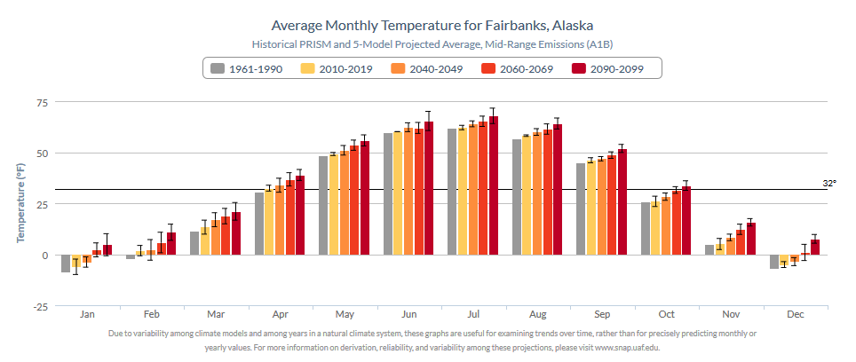

To get started, an example version 1 Community Charts graphic is shown below to illustrate a key opportunity for improvement. The original plots are available in Celsius (C) or Fahrenheit (F) degree units. Although bar charts or column charts whose bars originate from a fixed baseline make sense for random variables with a real zero, e.g., precipitation amounts, they are problematic for a random variable such as temperature. Unless using the Kelvin scale, which we are most certainly not in this context, temperature data in C or F becomes interval data in terms of level of measurement, like precipitation, but unlike precipitation it is not also ratio data.
Compared to a line plot or scatter plot which are more sensible, plotting temperature using bars leads to a natural inclination to view temperature as an amount, to see it as ratio data. In looking at the graph this may not be a conscious thought, but relative to an arbitrary baseline, differences in temperature may be thought of as greater than they really are for bars of substantially different height and lesser than actual for bars of similar height.
Another thing to note is that with the inclusion of error bars, the odd interpretation of bar height becomes even more evident and possibly confusing. In fact, sometimes the confusion is misplaced “Why is the error so much greater on these bars than on those bars?” The real issue is simply that they seem bigger relative to a shrinking bar based on proximity to the arbitrary baseline value. The error bars remain insensitive to this baseline because they are, like precipitation, ratio level data.

If there is specific interest in degrees above freezing, then the baseline is not so arbitrary and bar height is not problematic. However, this is not the case for the Community Charts application. There is more interest in general temperature trends over time, in a manner that genuinely reflects interval level measurement.
The most flagrant issue with the above plot, however, is that the bars maintain a baseline of zero degrees regardless of the unit of measurement! This was known at the time, evidenced by the forced inclusion of a 32 degree F line, which thankfully is not similarly hardcoded into the version using Celsius as a bar baseline of zero degrees is hardcoded here.
As long a bar plot is used to display these trends, there will have to be a baseline. Later this problem will be circumvented with an alternative type of bar plot, but for now we continue with a common baseline value. We will stick with freezing point as one sensible baseline.
As a quick aside, another option is to use the historical “baseline” average temperature, as it’s ironically already called. This may be more sensible given the general utility of the information in the graph. Additionally, there would then be no need to plot twelve monthly historical period bars, greatly freeing up space and opening up the plot in a way that could make it more easily readable.
Below are two example plots from the Community Charts version 4 Lite suite using each temperature scale. The baseline is adaptive, defined as the freezing point irrespective of units of measurement. When changing the measurement scale, the data are not transformed in any way that should change the appearance of the bars in the two plots. Only the y-axis need take on new values.
Another difference that stands out is the increased range of the error bars. In neither version of Community Charts are these error bars in any strict sense. In the first version, the bars are so small because they represent one standard deviation, as computed on a set of only five values (the five climate models). Standard deviation naturally invokes thoughts of symmetry. In fact, as can be expected, the bars in the original plot are drawn extending symmetrically one standard deviation from the mean in each direction. This is based on a small collection of future values from a highly uncertain variable and there is no way to see from the plot how these five climate model values are distributed around their mean.
Considering the small sample, the possible skewness of the values, that variability is not the same as uncertainty, and that the models and scenarios available in the Community Charts application account for only a portion of the total uncertainty in future projections, it is arguably more useful as well as honest to display the range of the five climate models than the standard deviation around the mean. In any case, it is easy enough to optionally provide either statistic for error bars, just as version 1 allows error bars to be toggled on or off. Below are three plots showing each of these three options when plotting precipitation trends.
Precipitation is a random variable that typically displays natural heteroskedasticity. Error bars may be larger, requiring a greater range for the overall y-axis in the graph, hence why the colored bars appear smaller now.
Precipitation is also likely to have a skewed distribution, making use of standard deviation without additional information sometimes unable to depict an accurate representation of variation. Here the full spread of the five individual models is depicted by the error bars.